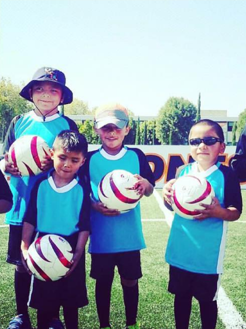

|  | Topitos FC |
El primer equipo infantil de Fútbol para Ciegos y Débiles Visuales en México nace en 2016, con el objetivo de promover un espacio seguro para niños y niñas con discapacidad visual. El equipo infantil busca abrir oportunidades de juego y recreación a través de la práctica del deporte, y así, impulsar a los niños y niñas con discapacidad visual a formarse como buenos deportistas, a la vez que trabajamos valores individuales y colectivos, buscando mejorar la integración y la independencia de las y los niños a la sociedad. El trabajo se enfoca en actividades basadas en el juego y el deporte, así como espacios de aprendizaje usando el fútbol como una herramienta de aprendizaje. |